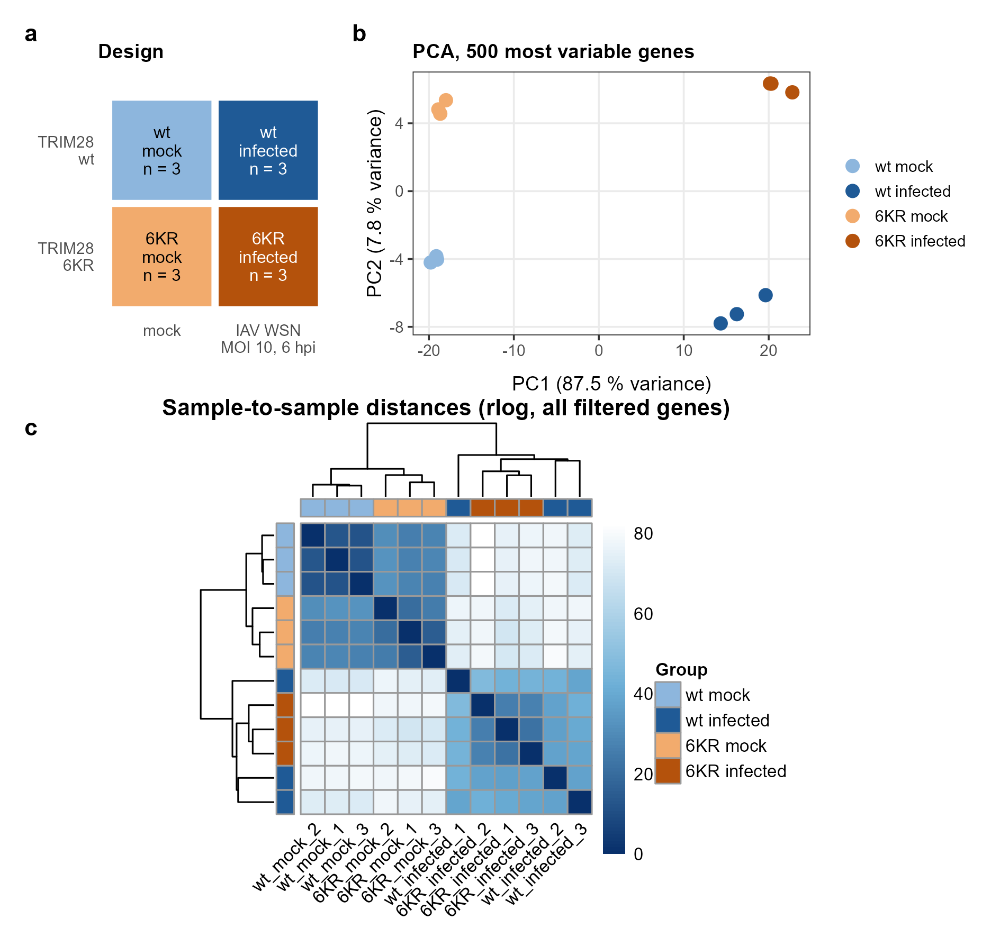
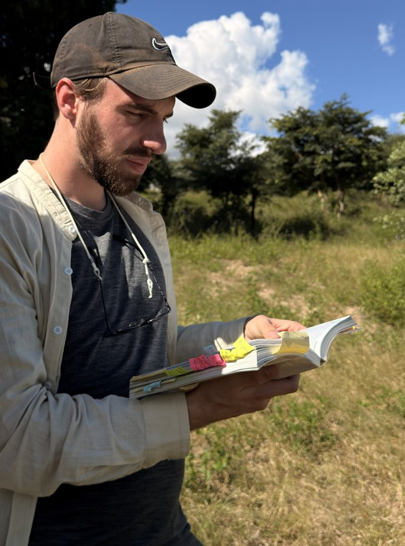
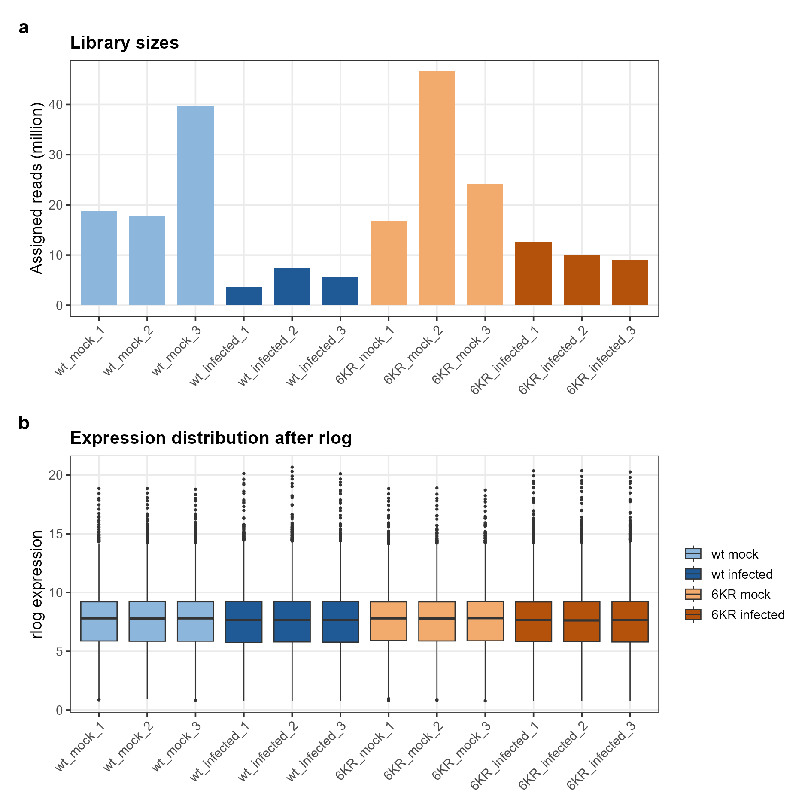
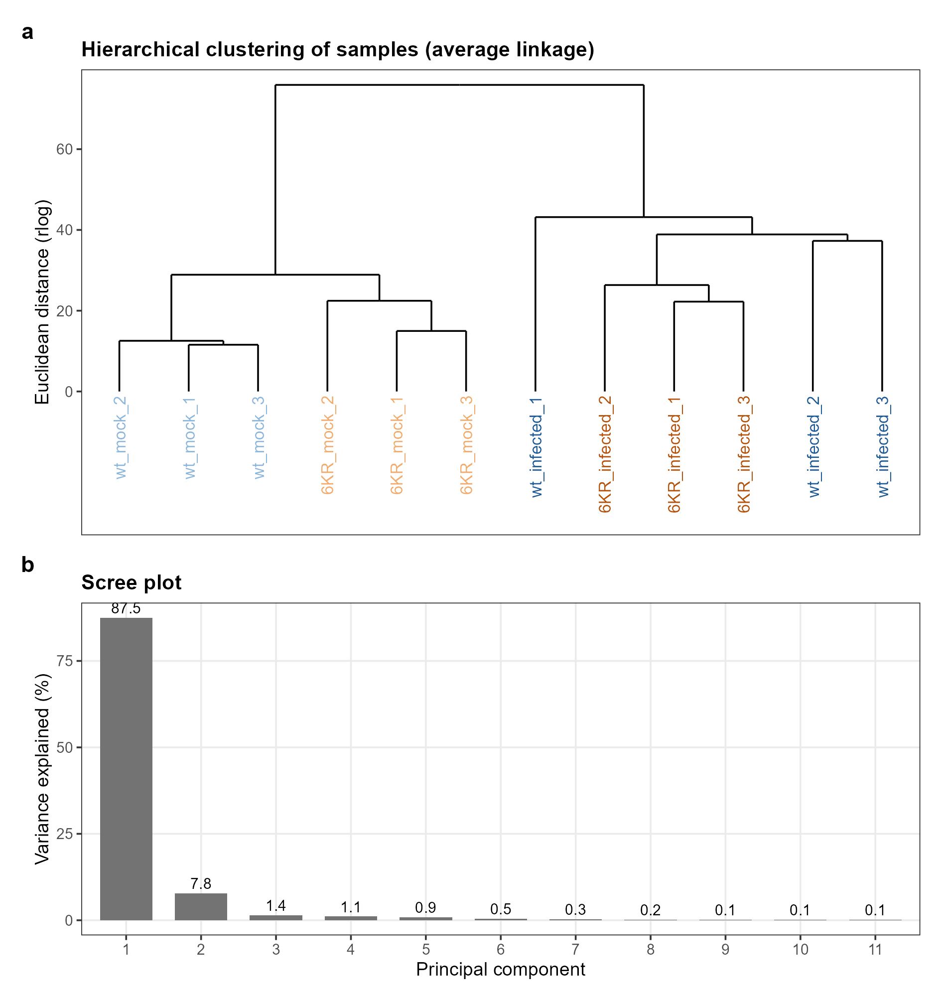

Principal component analysis of the 500 most variable genes after rlog transformation. Interactive: hover for sample name and library size, click a legend entry to hide a group.
Data and quality control
Do the samples group as expected?
Data
The counts come from GEO series GSE133329, deposited with the study of Schmidt et al. (PNAS 2019). A TRIM28 knockout clone of A549 lung epithelial cells was reconstituted with wild-type TRIM28 (wt) or with TRIM28 6KR, a mutant whose six SUMOylation sites are replaced. Cells were mock treated or infected with IAV A/WSN/33 at a multiplicity of infection of 10 for 6 hours, with three replicates per group. The 12 count tables contain 21,386 genes.
Genes were kept when they had at least 10 counts in at least 3 samples, 3 being the size of the smallest group. This keeps genes that are switched on in a single condition, and it uses no group labels, which matters later: the filter is applied once to all samples before the cross-validation of the Random Forest, so it must not carry label information into the test sample. The filter kept 13,483 of 21,386 genes.
Infection separates the samples first, the genotype second
Counts were transformed with the regularised logarithm (rlog) of DESeq2 in blind mode, so that no group information enters the transformation. On the 500 most variable genes, the first principal component separates infected from mock samples and carries 87.5 % of the variance, the second separates the genotypes (7.8 %). Hover over a point to see the sample.

Is there an outlier?
On all filtered genes, the wt-infected replicates are further apart from each other (mean distance to their replicates 37.7–40.7) than the replicates of the other groups (11.8–26.4). These three samples also have the smallest libraries (3.6–7.5 million reads, against 9.1–46.6 million in the other groups) and the highest share of filtered genes with fewer than 5 counts (9.7–15.6 % against 1.6–6.8 %). The spread therefore most likely reflects noise in weakly expressed genes rather than a failed sample, and on the 500 most variable genes the four groups still form four separate clusters. All 12 samples were kept, and the noisier wt-infected group is named as a limitation.

NoteLibrary sizes and expression distributions

NoteHierarchical clustering and scree plot
